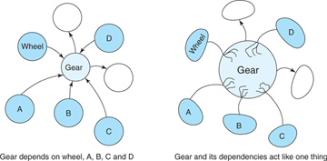

Practical Object Oriented Design in Ruby

Agenda:
Goals for this presentation:
- Learning experience
- Study guide/cheat sheet
- Value add vs transient jargon
- Espouse good values together as a team
What is the importance of Object Oriented Design?
Seems like a good time to reiterate why we need software design.
The importance is that code is unpredictable, and we need a system to organize it.
“Object-oriented design requires that you shift from thinking of the world as a collection of predefined procedures to modeling the world as a series of messages that pass between objects.”
Inhak in 2016 didn't believe in OOD
Inhak with Maui colorized (2016)
2016 Inhak
- Doesn't believe in OOP or good design
- Life is procedural, why shouldn't code be?
- Wears boring pajamas
- Doesn't walk his cat
2019 Inhak
- Believes in OOP and good software design principles
- Knows that delaying key design decisions provides benefits down the line
- Wears sick nintendo Gameboy pajamas
- Walks his cat
What are some things we can tell 2016 Inhak to convince him of the ways of object oriented design?
- OOD is agile
- Think of the future Inhaks and other developers
- "Change always happens in software"
- Big Up Front Design rarely works
What is good design?
Good Design is DIRECTLY correlated with the capacity of an application to deal with Change (change is hard)
We need to change our thinking about software.
Our REAL jobs are NOT programming. It's actually futureproofing!
"You must not only write code for the future you plan to deliver today, you must also create code that is amenable to being changed later. For any period of time that extends past initial delivery of the beta, the cost of change will eventaully eclipse the original cost of the application
How do we design software?
- SOLID principles (a la Kajal and Ian's presentation)
- Gang of Four design patterns
- Law of Demeter
- DRY
Part 1: Designing Classes with Single Responsibility Principle
Possibly one of the most talked about and important principles in software design
How do we organize our code into classes and know how to enforce single responsibility?
How about implementing TRUE?
- Transparent - The consequences of change should be obvious in the code that is changing and in distant code that relies on it
- Reasonable - The cost of any change should be proportional to the benefits of the change that the change achieves
- Usable - Existing code should be usable in new and unexpected contexts
- Exampary - The code itself should encourage those who change it to perpetuate those qualities
How do we know how to keep Single Responsibility in our code?
Ask yourself this question: What does this class do? If you use the word "and" to describe it, it is doing too much.
if you're using the word "or," it does two unrelated things and is still doing too much.
class Gear
attr_reader :chainring, :cog
def initialize(chainring, cog)
@chainring = chainring
@cog = cog
end
def ratio
chainring / cog.to_f
end
end
puts Gear.new(52, 11).ratio # -> 4.7272727272
class Gear
attr_reader :chainring, :cog, :rim, :tire
def initialize(chainring, cog, rim, tire)
@chainring = chainring
@cog = cog
@rim = rim
@tire = tire
end
def ratio
chainring / cog.to_f
end
def gear_inches
ratio * (rim + (tire * 2))
end
end
puts Gear.new(52, 11, 26, 1.5).gear_inches # -> 137.09090909
puts Gear.new(52, 11).ratio # -> ArgumentError: wrong number of arguments (2 for 4)
What can we do to make this more singularly responsible?
first, we can write code that better embraces change.
def cog
@cog
end
def gear_inches
ratio * (rim + (tire * 2))
end
This is better.
def gear_inches
ratio * diameter
end
def diameter
rim + (tire * 2)
end
"DO these refactorings even when you do not know the ultimate design. They are needed, not because the design is clear, but because it isn't... Good practices reveal design."
Instead of having Gear have those, let's separate Wheel from it.
class Gear
attr_reader :chainring, :cog, :wheel
def initialize(chainring, cog, rim, tire)
@chainring = chainring
@cog = cog
@wheel = Wheel.new(rim, tire)
end
def ratio
chainring / cog.to_f
end
def gear_inches
ratio * wheel.diameter
end
end
class Wheel
attr_reader :rim, :tire
def initialize(rim, tire)
@rim = rim
@tire = tire
end
def diameter
rim + (tire * 2)
end
end
Why else makes SRP important?
- prioritizes less entangled classes
- classes with more than one responsibility are difficult to reuse
- Prevent behemoth classes from forming
- methods are easy to move into another class
- Avoids need for comments
How would you refactor this?
class MarketSegment
belongs_to :product
def demographics
product.demographic.try(:categories) || []
end
def customer_journeys
product.customer_journey.try(:categories) || []
end
def display_customer_journeys
product.customer_journey.try(:display)
end
end
Law of Demeter
Also known as: "only talk to your immediate neighbors" or "use only one dot"
Part 2: Managing Dependencies
How to recognize when your object has a dependency
- The name of another class is in it.
- The name of a message that it inteds to send ot someone other than self is in it.
- The arguments that the message requires has a different class in it.
- The order of the arguments are set in stone
Classes should strive to be loosely coupled, not coupled close together.
Time to pick on market segment again
class MarketSegment
def is_linked
audience_hierarchies = AudienceHierarchy.where(market_segment_id: id)
Plan.find_by(audience_hierarchy_id: {"$in"=> audience_hierarchies.map{|ah| ah.id} }).present?
rescue Mongoid::Errors::DocumentNotFound
SubsegmentOutcome.where(market_segment_id: id).exists?
end
end
Any change in any of these classes would break this class.
How would you change it?
Option 1: You can inject dependencies
class MarketSegment
attr_reader :aud_hierarchy, :plan, :subsegment_outcome
def initialize(audience_hierarchy, plan, subsegment_outcome)
@aud_hierarchy = audience_hierarchy
@plan = plan
@subsegment_outcome
end
def is_linked
audience_hierarchies = aud_hierarchy.where(market_segment_id: id)
plan.find_by(audience_hierarchy_id: {"$in"=> audience_hierarchies.map{|ah| ah.id} }).present?
rescue Mongoid::Errors::DocumentNotFound
subsegment.where(market_segment_id: id).exists?
end
end
MarketSegment.new(AudienceHierarchy, Plan, SubsegmentOutcome)
This is much more loosely coupled.
Option 2: Isolate instance creation
class MarketSegment
def aud_hierarchy
@aud_hierarchy ||= AudienceHierarchy
end
def plan
@plan ||= Plan
end
def subsegment
@subsegment = SubsegmentOutcome
end
def is_linked
audience_hierarchies = aud_hierarchy.where(market_segment_id: id)
plan.find_by(audience_hierarchy_id: {"$in"=> audience_hierarchies.map{|ah| ah.id} }).present?
rescue Mongoid::Errors::DocumentNotFound
subsegment.where(market_segment_id: id).exists?
end
end
Option 3: Create class method isolations
class MarketSegment
def aud_hierarchy
@aud_hierarchy ||= AudienceHierarchy
end
def plan
@plan ||= Plan
end
def subsegment
@subsegment = SubsegmentOutcome
end
def hierarchies_by_id
aud_hierarchy.where(market_segment_id: id)
end
def subsegment_exists?
subsegment.where(market_segment_id: id).exists?
end
def is_linked
audience_hierarchies = hierarchy_by_id
plan.find_by(audience_hierarchy_id: {"$in"=> audience_hierarchies.map{|ah| ah.id} }).present?
rescue Mongoid::Errors::DocumentNotFound
subsegment_exists?
end
end
Another way to manage dependencies is to remove argument order dependency.
it is a liability when the class takes multiple arguments in order to instantiate.
class Wheel
attr_reader :rim, :tire
def initialize(args)
@rim = args[:rim]
@tire = args[tire]
end
def diameter
rim + (tire * 2)
end
end
Wheel.new(rim: 20, tire: 20)
This technique adds verbosity. In many situations verbosity is a detriment, but in this case it has value.
Explicitly define defaults.
class Wheel
attr_reader :rim, :tire
def initialize(args)
@rim = args[:rim] || 40
@tire = args[:tire] || 10
end
def diameter
rim + (tire * 2)
end
end
Wheel.new # Valid!
If your arguments have boolean values
class Wheel
attr_reader :rim, :tire
def initialize(args)
@rim = args.fetch(:rim, 40)
@tire = args.fetch(:tire, 10)
end
def diameter
rim + (tire * 2)
end
end
class Wheel
attr_reader :rim, :tire
def initialize(args)
args = defaults.merge(args)
end
def defaults
{:rim => 40, :tire => 10}
end
def diameter
rim + (tire * 2)
end
end
If key order optimizations are out of reach...
You can create a factory to fix the dependency.
### If this class can't be accessed
class Wheel
attr_reader :rim, :tire
def initialize(rim, tire)
@rim = rim
@tire = tire
end
end
# use this! manages order for you
class WheelWrapper
def self.wheel(args)
Framework::Wheel(args[:rim], args[:tire]
end
end
WheelWrapper.wheel(rim: 40, tire: 10)
Sometimes you need to invert dependencies.
Reasons to do dependency inversion:
- some classes are more likely than others to have changes in requirement